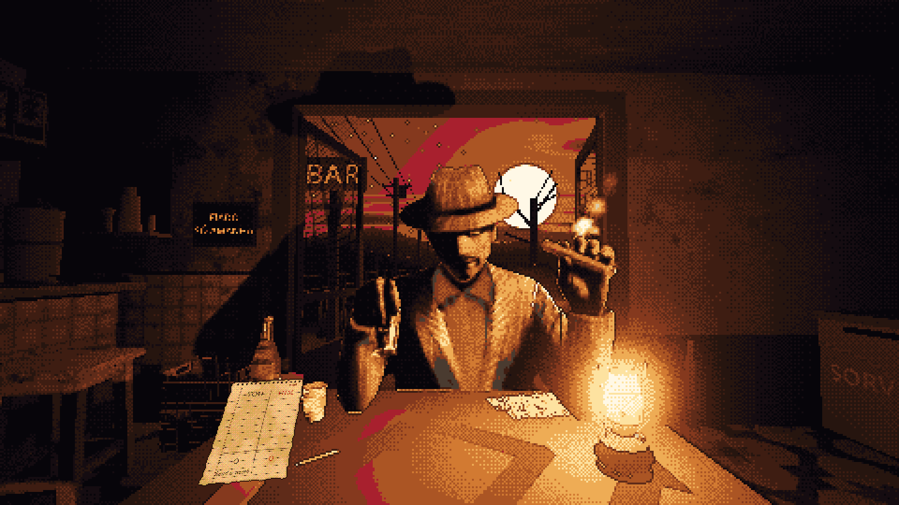
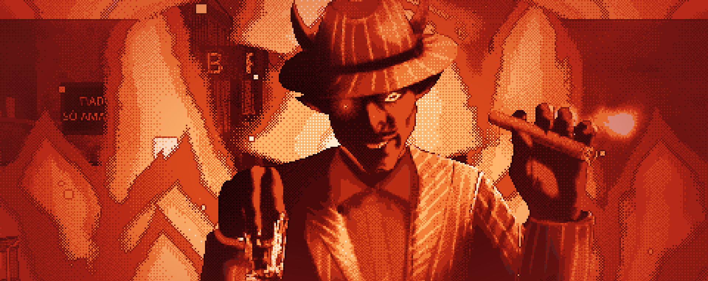
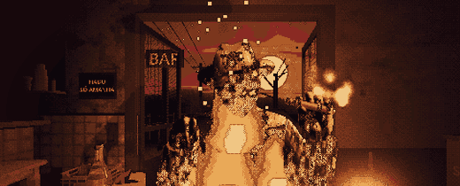
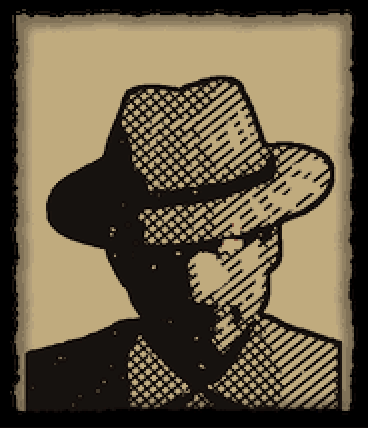
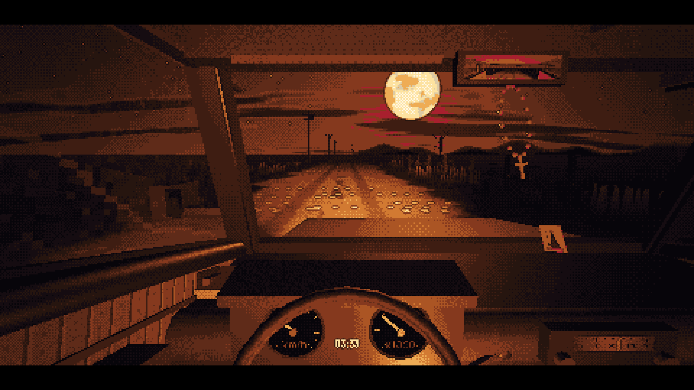
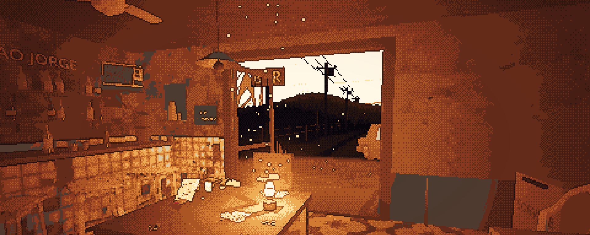
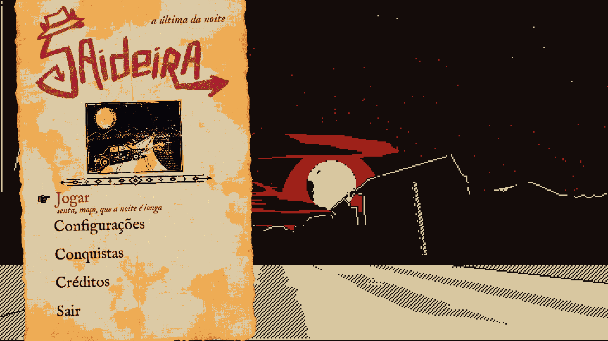
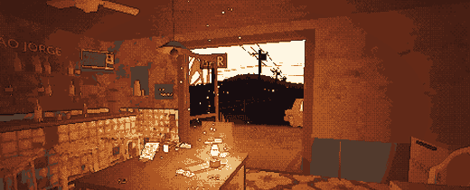
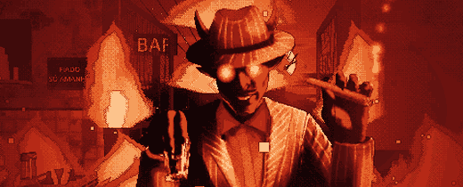

About the gameSobre o jogo
One more hand. One more drink. One of you is lying. It is three in the morning and your car just gave up on a road with nobody on it. The only light for miles is a neon sign: BAR. One man is still at the table, in a hat, shuffling a deck like he has been waiting for you. He wants a game of Truco, the loud, bluffing card game everybody in Brazil learns at a family table. The catch: he cheats. So do you. Look at him, or look at the table: you can never do both. Peek at his cards, hide one up your sleeve, mark the deck, buy time with a shot of cachaça; every trick makes noise. There is no 'accuse' button: you point at the proof. Each time you catch him, a little more of what is underneath the mask shows. Your money is your life; every defeat teaches you a dirtier trick, and when your pockets are empty he bets your soul. A narrator tells your night in verse, the way old cordel poems are told. Two endings: you walk out, or you stay. Three difficulties (Easy, Normal, Hard). Play in Portuguese or English, with keyboard, mouse or gamepad. Saideira was made for Gamejam+ 2026 by HFTS PRODUCTIONS.
Mais uma mão. Mais uma dose. Um de vocês está mentindo. São três da manhã e seu carro morre numa estrada vazia; a única luz é um letreiro de neon: BAR. Na mesa, um homem de chapéu embaralha as cartas como se esperasse por você e quer jogar Truco. O problema: ele rouba. Você também. Olhe para ele ou para a mesa, nunca as duas coisas ao mesmo tempo. Espie as cartas dele, esconda uma na manga, marque o baralho, ganhe tempo com uma dose de cachaça; toda trapaça faz barulho. Não existe botão de 'acusar': você aponta a prova. A cada flagra, a máscara dele racha um pouco mais. Seu dinheiro é sua vida; cada derrota ensina um truque mais sujo e, quando o bolso esvazia, ele aposta sua alma. Um narrador conta a noite em versos, como no cordel. Dois finais: você sai, ou você fica. Três dificuldades (Fácil, Normal, Difícil). Em português ou inglês, com teclado, mouse ou gamepad. Feito para a Gamejam+ 2026 pela HFTS PRODUCTIONS.
Play on itch.ioJogar no itch.io →GalleryGaleria









CreditsCréditos
- HFTS PRODUCTIONS
- Kauã Neves (Neferoo no itch.io)